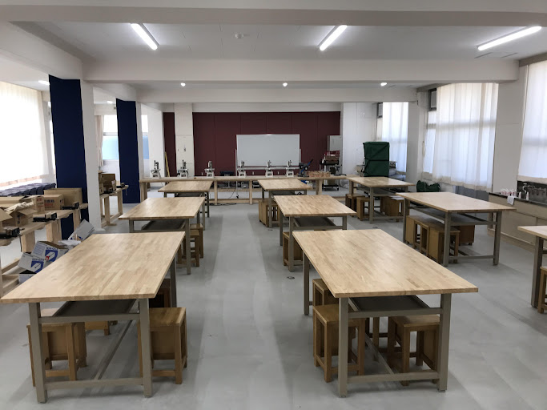

大阪府立水都国際中学校＆高等学校
住所：大阪市住之江区南港中３−７−１３
電話番号：06-7662-9600（中学校）
電話番号：06-7662-9601（高等学校）

校舎はとてもきれいです。2019に設立された学校のため、全体的に新しいです。

１階と３階にはカフェテリアがあります。
レンジ、給湯器、自動販売機などがあり、その上３階にはパンやお菓子の販売機もあり、主に給食のない高校生が利用しますが、中学生も使用可能です。
また今現在も生徒会ではメニューを増やしたりするために検討をしています。

上の写真は技術室です。
他の学校と同じように、技術で使う道具などが揃っています。

庭ですが、もとは玄関として利用されていました。
今ではあまり利用されませんが、多くの植物が植えてあり、授業の中で、観察に行ったりすることがあります。
写真では写っていませんが、奥にも道があります。

ライブラリーと呼ばれる、図書館です。
数々の本が揃っています。
そして、水都の特徴の一つでもある、ライブラリー内に飲食、会話の可能なスペースがあることや、逆に静かに読書、勉強をしたい人などのスペースもあるということで、多くの生徒が利用しています。
リンク